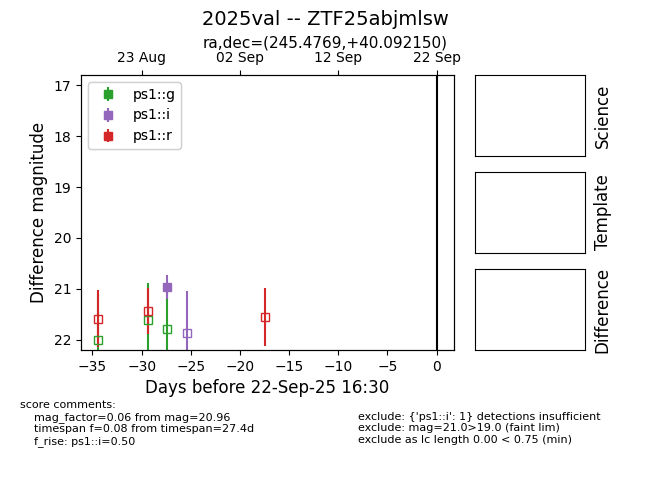

FINK: ZTF25abjmlsw
Lasair: ZTF25abjmlsw
ALeRCE: ZTF25abjmlsw
TNS: 2025val
YSE: 2025val
2025val (yse,tns)
ZTF25abjmlsw (ztf,fink)
equatorial (ra, dec) = (245.4769,+40.09215)
galactic (l, b) = (63.6633,+44.99372)

last ps1::i=20.96
1 ps1::i detections